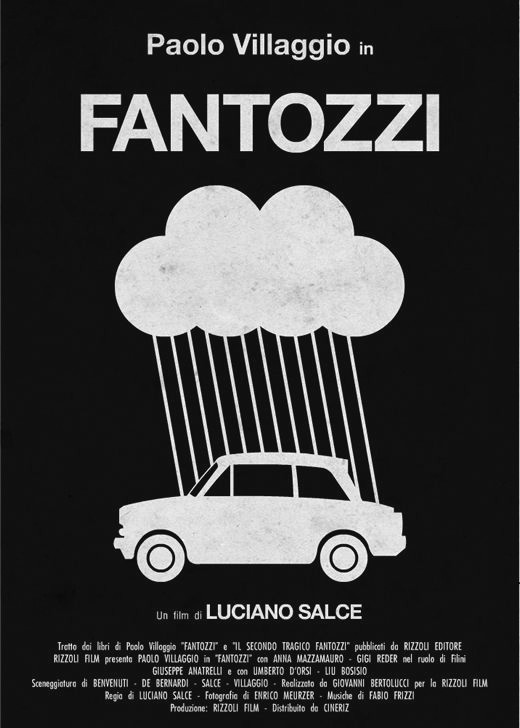

Fantozzi's Movies
Fantozzi's Movies
Fantozzi saga is a group of movies created by Paolo Villaggio that tell the story of Ugo Fantozzi. His role is that of a hapless accountant who is fighting with the vices, the tortures and the changes in Italian society. What made the character famous is its extravagant exaggeration of customs and habits, in a manner so coarse and grotesque that immediately made Fantozzi the representative of Italy's lower middle class.
Ugo Fantozzi
Il personaggio esordisce nel 1968 nella trasmissione che segna l'esordio televisivo di Paolo Villaggio, Quelli della domenica, anche se veniva citato in terza persona nei monologhi dell'artista genovese. Negli sketch di Quelli della domenica, Villaggio era solito raccontare storie comiche e catastrofiche, col suo lessico particolarissimo, fondato sull'iperbole di cui il protagonista era spesso lo sventurato Fantozzi. Fantozzi era il cognome di un impiegato nella grande azienda (la Italsider) dove aveva lavorato Villaggio nonché il suo vicino di scrivania. Si faceva trascinare nelle iniziative dello stesso Villaggio, dal Fantozzi chiamato erroneamente "Selvaggio", situazione che anticipa il ruolo di organizzatore di viaggi che sarà di Fracchia e del Ragionier Filini nei racconti e nei film del personaggio. Tra i colleghi di Fantozzi, infatti, nei racconti sono presenti anche queste due figure, due personaggi che convivono nei primi due libri di Villaggio, per poi fondersi, grazie a un'intuizione del regista Luciano Salce, nell'unico personaggio di Filini, che avrà il ruolo dell'organizzatore, del massacratore emotivo di ciascun impiegato e di maniaco che crede di intendersi di tutto, nei film e nei successivi libri di Villaggio. Da queste storie Villaggio scriverà dei racconti per l'Europeo, che verranno raccolti nel libro Fantozzi (1971) che diventa ben presto un bestseller, (più di un milione di copie vendute)[1], venendo anche tradotta in molte lingue. Infatti l'attore genovese vince, in Unione Sovietica, il premio Gogol come "miglior scrittore in cirillico", nella sezione "migliore opera umoristica"[2]. Nel 2011, per i 150 anni dell'Unità d'Italia, il libro è stato scelto dal comitato scientifico del Centro per il libro e la lettura tra i 150 libri che hanno segnato la storia del nostro paese.[3] Visto il grande successo, si pensa ad una trasposizione cinematografica, e alla fine il ruolo del protagonista sarà rivestito da Paolo Villaggio stesso, che presterà il suo volto a quella che è la sua maschera più famosa e apprezzata. Nel 1975 esce il primo film, dal semplice titolo Fantozzi, tratto dai primi due libri del personaggio e diretto da Luciano Salce. Curiosamente, l'artista genovese aveva, fin dall'inizio, scartato l'idea di recitare nel film, affidando il ruolo prima all'amico Renato Pozzetto e su rifiuto di quest'ultimo a Ugo Tognazzi[4]. Dopo il rifiuto di Tognazzi, Paolo Villaggio deciderà di interpretare il suo personaggio di Fantozzi. Il film ha un grande successo, tanto che inizia una delle saghe più longeve del cinema italiano comico. Seguiranno infatti altri nove episodi: il secondo diretto ancora da Salce, dal terzo al nono sotto la direzione di Neri Parenti e l'ultimo (Fantozzi 2000 - La clonazione) con la regia di Domenico Saverni.
